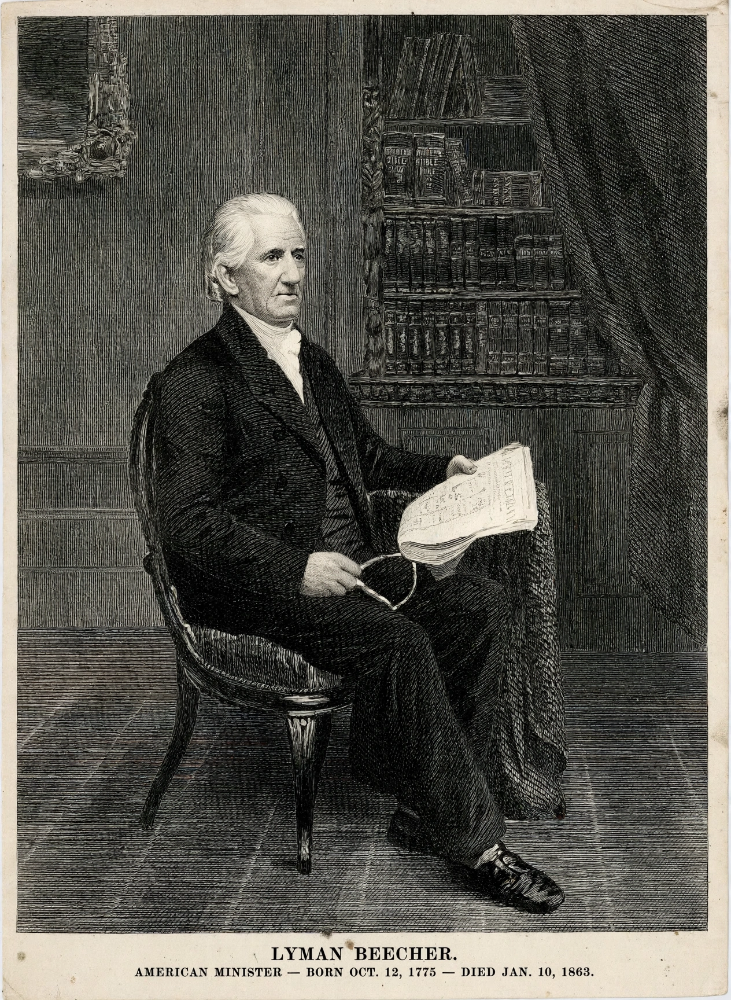

Lyman Beecher
From Wikipedia, the free encyclopedia
| Born | 12 October 1775, New Haven, Connecticut |
|---|---|
| Died | 10 January 1863 (aged 87), Brooklyn, New York |
| Occupation | Presbyterian minister, theologian |
| Children | 13, including Harriet Beecher Stowe and Henry Ward Beecher |

Lyman Beecher (October 12, 1775 – January 10, 1863) was an American Presbyterian minister and a leading figure of the Second Great Awakening. A prominent revivalist, temperance advocate, and theological educator, he was the patriarch of one of the most influential American families of the 19th century: his children included the novelist Harriet Beecher Stowe, the preacher Henry Ward Beecher, the educator Catharine Beecher, and the abolitionist Charles Beecher.
Life
Educated at Yale, Beecher pastored congregations in East Hampton, Litchfield, and Boston, where his Hanover Street Church became a centre of orthodox revivalism against Unitarianism. His six sermons on intemperance (1826) became a foundational temperance text. In 1832 he moved west to Cincinnati as the first president of Lane Theological Seminary, hoping to train ministers for the frontier; conflict over slavery among the students led to the "Lane Rebels" departing for Oberlin in 1834, and Beecher was himself tried (and acquitted) for heresy by his denomination. He retired to Brooklyn in 1851.